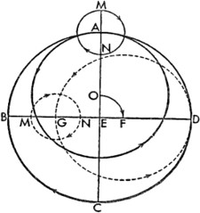
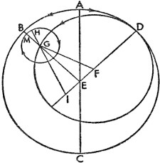
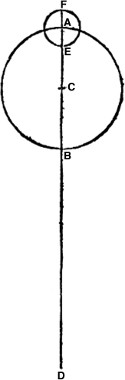

Bir önceki kitapta gücümüz yettiğince Dünya'nın Güneş'in etrafındaki hareketinden kaynaklanan görünümleri açıkladık ve aynı yolla bütün gezegenlerin hareketlerini hesaplayabileceğimizi ileri sürdük; şimdiyse Ay'ın dairesel hareketi karşımıza çıkıyor ve hem geceye hem de gündüze ait hareketiyle kaçınılmaz olarak yıldızların konumlarını anlaşılır ve çözümlenir kılıyor. Ayrıca, her ne kadar farklı yapıda olsalar ve bütün gezegenler içinde devinimlerini Dünya'nın merkezine göre gelişigüzel değiştiren tek gezegen olsa da Dünya'ya en benzer odur. Kendi başına ele alındığında ondaki hiçbir değişikliğin Dünya'nın hareketini gösteren bir belirginliği yoktur, belki günlük hareket bir istisna sayılabilir; işte bu nedenle eskiler Dünya'nın evrenin merkezi ve bütün devinimlerin ortak noktası olduğuna inanmıştı. Ay'ın dairesel hareketine dair açıklamamızda Dünya'nın etrafında bulunduğuna dair eskilere ait görüşe katılmakla birlikte, yine onlardan edindiğimiz kimi bilgilere ters gelecek daha doğru bilgiler sunacağız; bu bilgiler sayesinde elimizden geldiğince, Ay'ın hareketini kesin bir şekilde sunmaya çalışacağız.

1. Eskilerin Ay'ın Çizdiği Çemberlere Dair Hipotezleri
Buna göre Ay'ın hareketi şu niteliktedir: Ay, ekliptiği değil, onu kesen ve daha sonra onun tarafından kesilen kendi eğimini izler ve ona ait olan buradaki kesişim çizgisinden her iki enleme doğru geçer. Bütün bunlar, Güneş'in yıllık hareketindeki gündönümleri gibi kesinkes gerçekleşir; yıl nasıl Güneş'le ilgiliyse, ay da Ay'la ilgilidir. Buna göre kesitlerdeki orta konumlara kimileri ekliptik, kimileri de düğüm noktaları demiştir; Güneş ile Ay'ın bu konumlardaki kesişimleri ve karşıt konumlarda olmaları da ekliptik adını alır. Zira Güneş ve Ay tutulmalarının gerçekleştiği başka ortak konumlar yoktur. Ay'ın sapması başka konumlarda Güneş ve Ay'ın birbirinin ışığından mahrum kalmalarını önler; ayrıca bu şekilde geçip giderken biri diğerinin önünü kesmez. Dahası dört temeli ya da dayanak noktasıyla Ay'ın yörünge çemberi, gün başına yaklaşık 3'lık düzenli bir hareketle Dünya'nın merkezi etrafında eğik olarak döner ve devinimini 19 yılda tamamlar. Buna göre Ay, bu yörünge dairesinde ve kendi düzleminde doğuya doğru, kimi zaman en düşük, kimi zaman da en yüksek hızda hareket ediyor görünür. O halde daha yavaşken daha yüksekte, daha hızlıyken ise Dünya'ya daha yakın olur; bu durum, başka herhangi bir gezegenden ziyade Ay söz konusu olduğunda Dünya'ya yakınlığından ötürü daha kolay anlaşılır. Buna uygun olarak eskiler hareket hızındaki değişimin dış tekerleme eğrisinden kaynaklandığını; bu dış tekerleme eğrisinin etrafında dolaşan Ay'ın üstteki yarım dairedeyken düzenli hareketten hızın çıktığını, aşağı yarım dairedeyken ise aynı ölçüde ona eklediğini düşünmüşler. Ayrıca gösterildiği gibi, dış tekerleme eğrisi sayesinde ortaya konan tüm bu oluşumlar dış merkezli daire sayesinde de ortaya konabilir. Ancak eskiler, Ay'ın ikili düzensizliği varmış gibi göründüğünden, tutulmadan yararlanmayı tercih etmiştir. Buna göre Ay, dış tekerleme eğrisindeki en yüksek ya da en alçak apsitteyken düzenli hareketten hiçbir farklılık görünmüyordu. Fakat dış tekerleme eğrisiyle daha büyük olan dairenin temas noktasının etrafında değişken bir farklılık vardı; bu fark, yarımay oluşurken ya da yarımaydan çıkılırken, dolunayda olduğundan çok daha büyüktü; bu da düzenli ve sabit bir süreçte gerçekleşiyordu. Bu yüzden dış tekerleme eğrisinin hareket ettiği dairenin Dünya'yla eş merkezli olmadığını, aksine, Ay'ın yasaya uygun olarak, Güneş'le kavuştuğu ve karşı konumda[149] bulunduğu tüm ortalama noktalarda üzerinde hareket ettiği bir dış tekerleme eğrisini taşıyan bir dış merkezli daire olduğunu düşünüyorlardı ki bu dış tekerleme eğrisinin, dış merkezli dairenin yerötesinde, fakat dış merkezli dairenin yerberisindeki dairenin ortalama çeyreklerinde olması gerekiyordu. Bu yüzden Dünya'nın merkezinin etrafında birbirine zıt ve karşılıklı iki hareket –yani dış tekerleme eğrisinin doğu yönündeki ve dış merkezli dairenin merkeziyle apsitlerinin batı yönündeki hareketleri– ve aralarındaki Güneş'in her daim ortada olan ortalama konum çizgisinin olduğunu tasarlamışlardı. Dış tekerleme eğrisi bu yolla yılda iki defa dış merkezli daireye çaprazlama geçiyordu. Bütün bunları gözümüzün önüne getirebilmek için ABCD Dünya'yla eş merkezli eğik Ay çemberi olsun, AEC ve BED çapları boyunca dörde bölünsün ve E Dünya'nın merkezi olsun. Bu durumda AC, hem Güneş'le Ay'ın ortalama kavuşumu hem de aynı konum ve zamanda merkezi F olan dış merkezli dairenin yerötesi ve MN dış tekerleme eğrisinin merkezi olacaktır. Bu durumda dış merkezli dairenin yerötesi batıya; dış tekerleme eğrisi ise doğuya doğru hareket ettirilsin.

Ayrıca ikisi de Güneş'in ortalama kavuşumları ve karşı konumlarından hesaplandığı gibi, düzenli ve aylık devinimlerde E'nin etrafında düzenli olarak hareket etsin. Güneş'in ortalama konumunun AEC çizgisi, her daim bunların arasındaki mesafenin yarısında olsun; dahası Ay, dış tekerleme eğrisinin yerötesinden batıya doğru hareket etsin. Zira gökbilimciler, görünümlerin bu yapıyla uyumlu olduğunu düşünmektedir. Buna uygun olarak yarımaylık bir dönemde, dış tekerleme eğrisi bir yarım çemberin Güneş'ten uzaklığını değiştirir. Fakat dış merkezli dairenin yerötesinden itibaren tam bir devinimi tamamlar; sonuç olarak bu zamanın ortasında Ay, yarımay durumundayken, BD çapı boyunca yeröte ile karşıt konumda olacaktır; dış tekerleme eğrisi de, Dünya'ya daha yakın olduğu G noktasında düzensizliğe dair en büyük farkları oluştururken, dış merkezli dairenin yerberisindedir. O halde eşit büyüklükler eşit olmayan aralıklardayken görüş açısına daha yakın olan daha büyük görünür. Bu durumda farklar, dış tekerleme eğrisinin MN çapı en küçük orandayken AE çizgisine doğru, fakat diğer konumlardaki diğer bütün çizgilere nispeten daha büyük orandayken GE çizgisine doğru olacağından, dış tekerleme eğrisi A'dayken daha küçük; G'deyken daha büyük olacaktır. Zira GE, Dünya'nın merkezinden dış merkezli daireye doğru uzanan tüm bu çizgilerin en kısası, AE veya onun eşiti DE ise en uzunudur.
2. Bu Kabullerin Yetersizliği Üzerine
Bizden öncekiler dairelerin tertibinin Ay görünümleriyle uyumlu olduğunu düşünüyordu. Fakat bu hususu daha dikkatli bir şekilde irdelersek, mantıksal çıkarım ve sezgi yoluyla kanıtlayabileceğimiz kadarıyla bu hipotezin çok da yerinde ve doğru olmadığını buluruz. Dış tekerleme eğrisinin merkezine ait hareketin, Dünya'nın merkezinin etrafında düzenli olduğunu kabul ederken aynı zamanda hareketin çizmiş olduğu kendi dış merkezli çemberin de düzensiz olduğunu düşünmeleri gerekir. Örneğin AEB açısının AED açısına; onun da 45ºye eşit olduğu düşünülürse bu durumda BED açısı 90º olur. Dış tekerleme eğrisinin merkezi G olarak alınırsa ve GF eklenirse GFD açısının GEF açısından, dış açının da iç ve karşı açıdan büyük olduğu anlaşılır.

Fakat birbirinden farklı DAB ve DG yaylarının her ikisi de bir periyot boyunca çizildiğinden DAB yayı 90ºye eşit, DG yayı da 90ºden büyük olduğunda DG yayı yine bu zaman diliminde dış tekerleme eğrisinin merkeziyle çizilir. Fakat yarımayda DAG yayının DG yayına, onun da 180ºye eşit olduğu açıktır. O halde dış merkezli çemberin üzerindeki dış tekerleme eğrisinin hareketi düzenli değildir. Fakat bu böyleyse, dış tekerleme eğrisinin görünen düzenli hareketi gerçekten de düzensizse ve yerleştirilmeye çalışılan, düşünülen esasa tümüyle ters ise, göksel cisimlerin hareketinin görünümlerden ötürü düzensizmiş gibi görünmesine rağmen aslında düzenli olduğuna dair kanaati nasıl karşılayacağız? Fakat dış tekerleme eğrisinin Dünya'nın merkezi etrafında düzenli olarak hareket ettiğini ve bunun yeterli ölçüde düzenli olarak görülmesi gerektiğini söylerseniz, bu durumda içinde kendi hareketi yer almayan ve kendi dış merkezli çemberinde bulunmayan dış tekerleme eğrisinden başka bir çemberdeki bu düzenlilik nasıl bir düzenlilik olacak? Gerçekten de eskilerin, dış tekerleme eğrisinde Ay'ın düzenliliğinin, kendisine dış tekerleme eğrisinin merkeziyle ilgili düzenliliğin kesin olarak atfedilmesi gereken Dünya'nın merkezinden –yani EGM çizgisinden– değil de Dünya'nın, kendisiyle dış merkezli çemberin merkezinin arasında, ortada bulunduğu başka bir noktadan hareketle –ki bu, Ay'ın dış tekerleme eğrisindeki düzensizliğinin bir göstergesi olan IGH çizgisidir– anlaşılabileceğini düşünmüş olmasına şaşıyoruz. Ve bu açıkça gösteriyor ki, bu hareket tam anlamıyla düzensizdir; o halde kısmen bu hipoteze uyan görünümler onları bu kabule zorlamış olmalı. Bu durumda Ay kendi dış tekerleme eğrisini düzensiz olarak kat eder; biz de eğer hakiki düzensizliklerden hareketle görünen hareketin düzensizliğini onaylamaya çalışsaydık, benzer bir mantık silsilesi oluştururduk. O halde bu noktada astronomi ilminden uzaklaşan eskilerin çıkış yolunu tanımadan ne yapacağız? Dahası deneysel ve sezgisel kavrayış bize Ay'ın paralakslarının, çemberlerin oranının sunduklarıyla uyumlu olmadığını gösteriyor. Zira komütasyonlar da denilen paralakslar Ay'ın etrafında belirgin hale gelen Dünya'nın büyüklüğünden kaynaklanır. Buna göre Dünya'nın merkezinden çizilen doğrularla Dünya'nın yüzeyi paralel görünmeyip aksine belirgin bir eğimle Ay'ın hacminde birbirini kestiğinden, Ay'ın görünen hareketinde kaçınılmaz olarak düzensizliğe neden olabilir; bu yüzden Ay, onu Dünya'nın dışbükeyliği boyunca dolaylı olarak izleyen ve onu yine Dünya'nın merkezinden ya da en yüksek noktasından gözleyenlerce farklı bir konumdaymış gibi görülür. O halde böylesi paralakslar Ay'ın Dünya'dan uzaklığına göre farklılık gösterir. Tüm matematikçilerin fikir birliğine göre, Dünya'nın yarıçapı 1 birimken, en büyük mesafe 641/6 birim olup; aynı ölçekdeşliğe göre en küçük mesafe 33p33' olmalıydı; o halde Ay da toplam mesafenin yaklaşık yarısından bize doğru hareket ederdi ve sonraki orana göre en büyük ve en küçük mesafedeki paralaksların, kareleri oranında birbirinden farklı olması kaçınılmaz olurdu. Fakat biz, Ay'ın yükseldiği ve alçaldığı yarımay zamanında beliren bu paralaksların, dış tekerleme eğrisinin yerberisinde bile çok belirsiz bir farklılık gösterdiğini ya da yeri geldiğinde fazlasıyla göstereceğimiz gibi, Güneş ve Ay tutulmalarında beliren paralakslardan da tümüyle farklı olmadığını görüyoruz. Fakat aynı nedenle çapının iki kat büyük ve iki kat da küçük görünmesi sebebiyle Ay'ın kendisi bu hatayı tam anlamıyla açık eder. Fakat çemberler çaplarının karesiyle orantılı olduğundan Ay, Dünya'ya en yakın olduğu dördün durumlarında, Güneş'in karşısında olduğu dolunay durumuna göre, dört kat daha büyük görünmelidir; bununla birlikte –her ne kadar tam zıddı apaçıksa da– yarımay, orada bir dolunay varmış gibi, alanının iki katı ışıkla parlamalıdır. Basit görüşle yetinmeyen biri, Hipparchus'un dioptrasıyla ya da Ay'ın çapını hesaplayabilecek başka aletlerle bir deney yaparsa çapın, dış merkezli çembersiz dış tekerleme eğrisinin gerektirdiğinin haricinde farklılık göstermediğini bulacaktır. Bu nedenle Ay'ın konumları sayesinde sabit yıldızları inceleyen Menelaus ve Timochares, aynı Ay çapını her daim, çoğu zaman göründüğü 0,5º olarak almakta tereddüt etmemiştir.
3. Ay'ın Hareketine Dair Başka Bir Teori
Bu yolla, dış tekerleme eğrisinin daha büyük veya daha küçük görünmesini sağlayanın dış merkezlilik olmadığı, aksine çemberlerle ilgili başka bir bağıntının olduğu tam anlamıyla ortaya konmuş olur. Buna göre AB, ilk ve en büyük olarak adlandıracağımız dış tekerleme eğrisi, C de onun merkezi olsun.
D, Dünya'nın merkezi olsun, DC düz çizgisi de D'den dış tekerleme eğrisinin en yüksek apsidine uzatılsın; merkezi A olan başka bir EF küçük dış tekerleme eğrisi çizilsin; bütün bunlar Ay'ın eğik çemberinin aynı düzleminde yer alsın. Buna göre C, doğu; A da batı yönünde; yine Ay, EF'nin üst konumunda yer alan F'den doğuya doğru hareket ettirilsin. Ve bu düzen korunsun; DE çizgisi, Güneş'in ortalama konumunun çizgisiyle birken, Ay her daim C merkezinin en yakınında, yani E noktasında; fakat dördünlerde F noktasında, yani en uzağında olsun. Ay'ın görünümlerinin bu yapıyla uygun olduğunu söylüyorum. Zira bu, Ay'ın ayda iki defa EF dış tekerleme eğrisinin etrafında dolaşmasıyla da uyumludur; bu süre boyunca C, Güneş'in ortalama konumuna göre bir devinim gerçekleştirir. Ve yeniay ile dolunay, yarıçapı CE olan en küçük daireyi oluşturuyor görünecektir; fakat Ay, dördünlerinde yarıçapı CF olan en büyük daireyi oluşturacaktır ve bu yüzden Ay, yine kavuşumlarda ve karşı konumlarda düzenli ve görünen hareketler arasında daha küçük, fakat dördünlerde E merkezinin etrafındaki eşit olmayan ancak benzer yaylardan ötürü daha büyük farklar oluşturacaktır. Ve dış tekerleme eğrisinin merkezi her daim Dünya'yla eş merkezli bir çemberde olduğundan, böylesine farklı değil, aksine dış tekerleme eğrisine uygun paralakslar gösterir. Ve Ay kütlesinin niçin bir şekilde kendisi gibi görünmüş olduğu açıklanmış olacak ve Ay'ın hareketinden kavranan diğer bütün olgular da bu yolla ortaya çıkacaktır. Bütün bunları hipotezlerimize dayanarak açıklayacağız; fakat aynı şeyler, tam oran korunarak Güneş'le ilgili olduğu gibi, dış merkezli dairelerden hareketle de oluşabilir. Bu durumda, yukarıda yaptığımız gibi, düzensiz hareketleri onlarsız ayırt edilemeyeceğimiz düzenli hareketlerden başlayacağız. Fakat burada, bahsetmiş olduğumuz paralakslardan kaynaklanan küçük bir zorluk söz konusudur; Ay'ın konumu, astrolabiumlarla ya da başka aletlerle gözlenemez. Ancak doğanın bu konuda ihtiyaç içindeki insana bir lütfu söz konusudur; öyle ki Ay'ın konumu, aletlerden ziyade tutulmaları sayesinde daha kesin olarak ve herhangi bir hata şüphesi uyandırmadan hesaplanabilir. Bunun için Dünya'nın öbür bölümleri gün ışığıyla açık seçik ortadayken, gecenin, Dünya'nın koni biçiminde olan ve bir noktada sonlanan gölgesinden başka bir şey olmadığını düşünmemizi sağlar. Bu koninin içine giren Ay kararır ve karanlığın orta noktasında yer aldığında, hiç kuşkusuz, Güneş'in karşı konumunda bulunduğu anlaşılır. Fakat Ay onun önüne geçince gerçekleşen Güneş tutulmaları, Ay'ın konumunun bu kadar kesin belirlenmesini sağlamaz. Yukarıda bahsettiğimiz paralakstan ötürü Dünya'nın merkezine göre kavuşum henüz gerçekleşmemiş ya da tamamlanmamış olsa da, Güneş'le Ay'ın kavuşumunu bir vakitte görürüz. Ve buna uygun olarak aynı Güneş tutulmasının Dünya'nın farklı bölgelerinden büyüklük ve süre bakımından eşit ve her koşulda aynı olmadığını görürüz. Fakat Ay tutulmaları söz konusu olduğunda böylesi bir engelden bahsedemeyiz; zira Dünya Güneş'ten geçen merkez boyunca karartıcı gölgenin eksenini taşıdığından, Ay tutulmaları Ay'ın seyrini kesin olarak saptamaya tam anlamıyla uygundur.